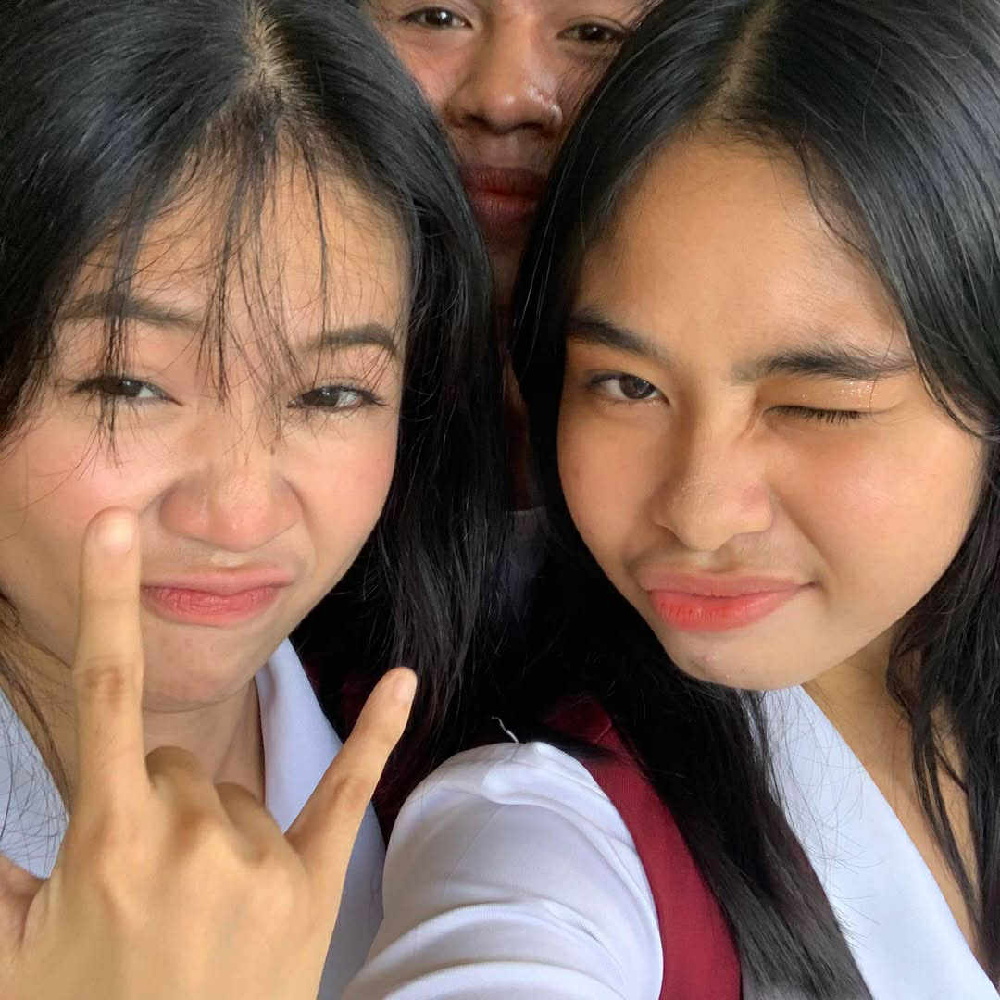
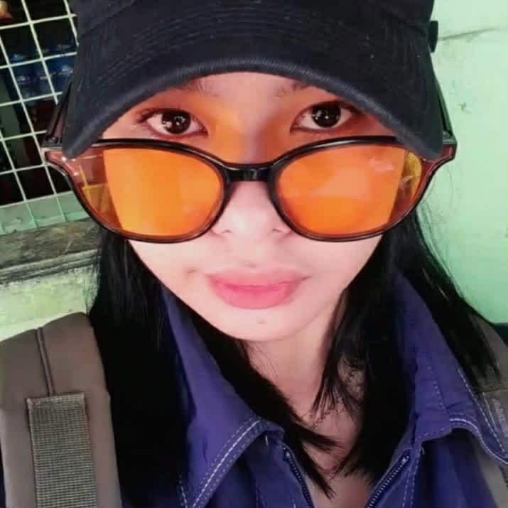
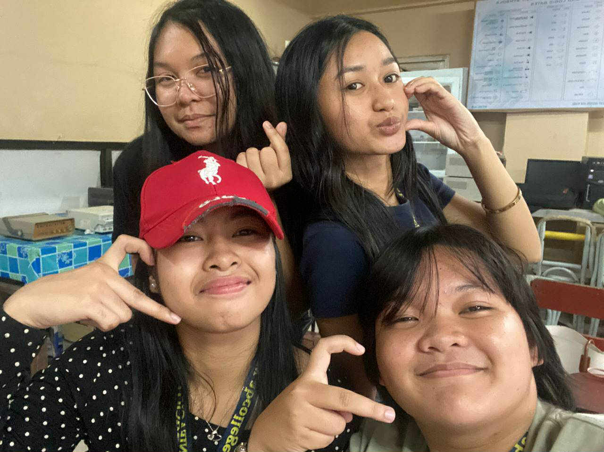
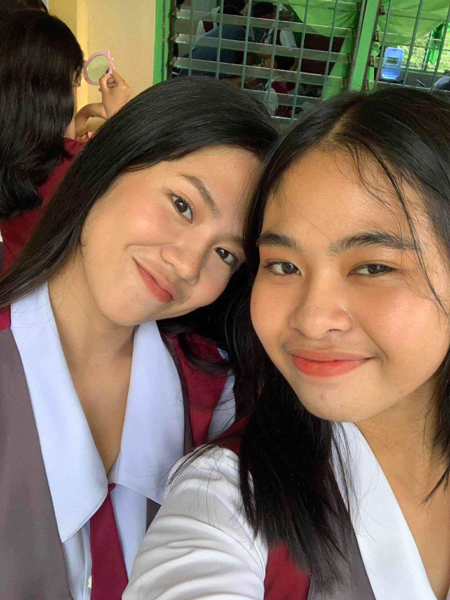
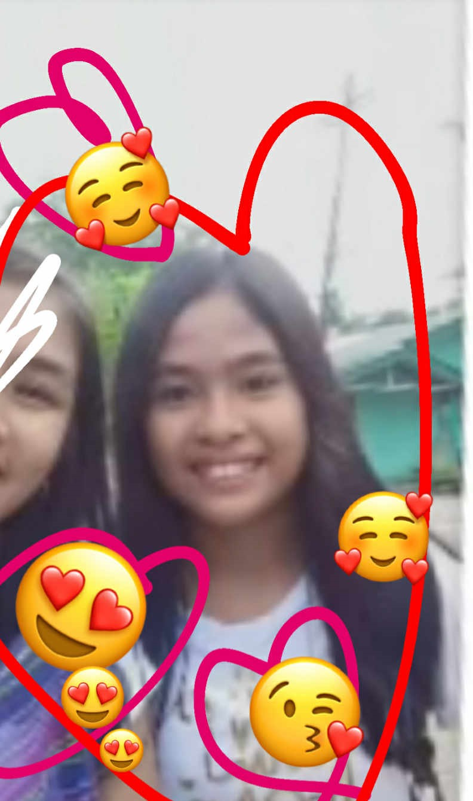
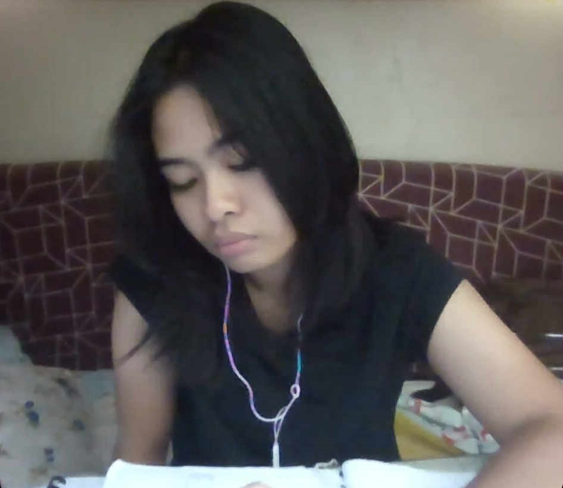
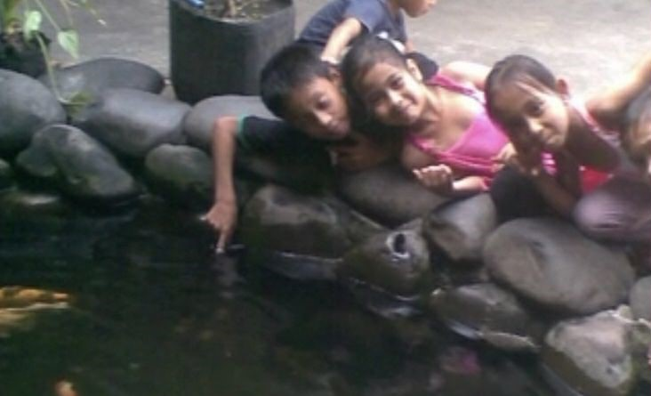
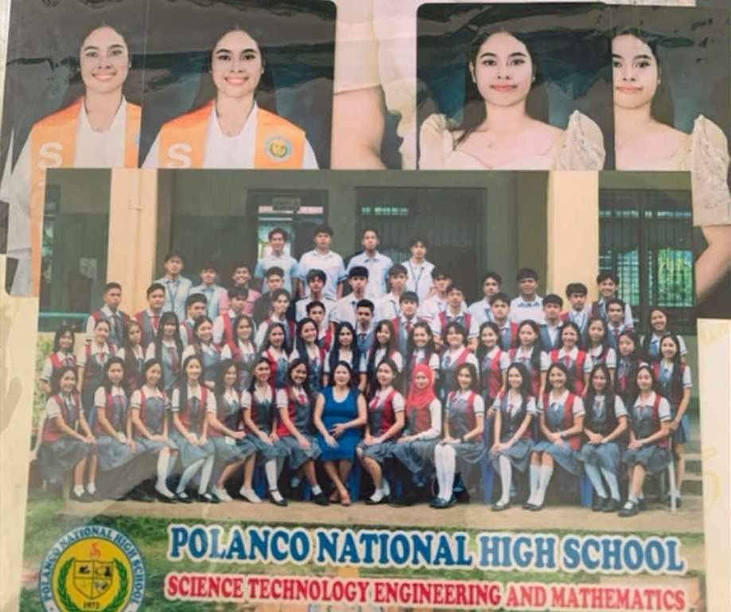

Dear langga 💗
thank you for being such a beautiful part of my life.
Every memory with you is something i'll always cherishs and carry them with me
i hope this year brings you happiness , love , and success
you're everything i asked for and more ,i love you so much and i will
do everything in my powers to show and prove you that,
as patinios said "i will love you for as long as the earth dances around the sun,
for every night that meets it's dawn ,you'll be my only one.
and when the skies forget to glow ,and time begins to fade ,my love will linger in the stars,
a promis softly made.
and when the stars forget their light ,i promise to love you still ,until the end of endless night,
and time itself stands ill"
and as kafka said "you're the knife i turn inside myself, this is love , this my dear ,is LOVE"
and as kiersten said" and i'd choose you, in a hundred lifetimes, in a hundred worlds, in any
version of reality ,id find you and i'd choose you"
and as emily said "I chose this single star
From out the wide night’s numbers - "
Sarah - forevermore!
I Love You